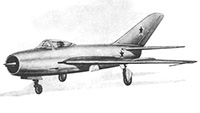
И-3 Фронтовой истребитель
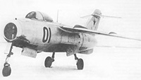
ЛА-15 Истребитель-перехватчик
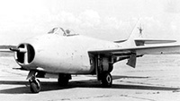
МИГ-9 Многоцелевой истребитель
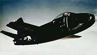
FJ-1 FURY Палубный истребитель
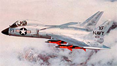
F3H DEMON Палубный истребитель
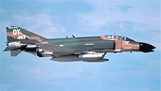
McDonnell Douglas F-4D PHANTOM II Многоцелевой истребитель
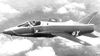
BR.1001 TAON Легкий ударный истребитель
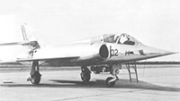
ETENDARD VI Ударный истребитель
Mirage IIIA
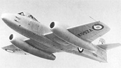
METEOR F.8 Истребитель-перехватчик
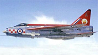
LIGHTNING F.1 Многоцелевой истребитель
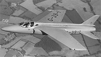
Fo.139 MIDGE Легкий истребитель
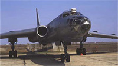
ТУ-16Б Средний бомбардировщик
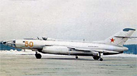
ЯК-26 Фронтовой бомбардировщик
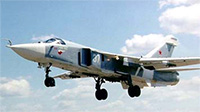
СУ-24 Фронтовой бомбардировщик
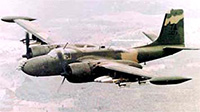
B-26 COUNTER INVADER Штурмовой бомбардировщик
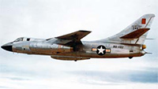
B-66 DESTROYER Тактический бомбардировщик
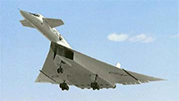
B-70 VALKYRIE Сверхзвуковой стратегический бомбардировщик
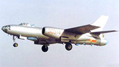
Harbin Н-5 Фронтовой бомбардировщик
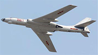
Xian Н-6 Фронтовой бомбардировщик
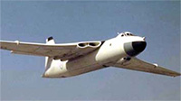
VALIANT Тяжелый бомбардировщик
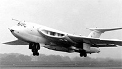
VICTOR Бомбардировщик средней дальности
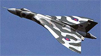
VULCAN Бомбардировщик средней дальности
 McDonnell Douglas F-4D PHANTOM II Многоцелевой истребитель
McDonnell Douglas F-4D PHANTOM II Многоцелевой истребитель И-3 Фронтовой истребитель
И-3 Фронтовой истребитель BR.1001 TAON Легкий ударный истребитель
BR.1001 TAON Легкий ударный истребитель METEOR F.8 Истребитель-перехватчик
METEOR F.8 Истребитель-перехватчик